Operación FakeWealth: Inteligencia de Amenazas sobre la Red cmdxcapital
Investigación de threat intelligence sobre una campaña de fraude financiero con infraestructura en Cloudflare y Google Cloud, migración de wallets Bitcoin, suplantación corporativa y fallos de OpSec que expusieron consultas SQL, tokens de sesión y rutas absolutas del servidor. Esta es la versión extendida del caso que forma parte de la Threat Hunter Recollection.
/índice_de_la_investigación +
00. Resumen de Inteligencia
La Operación FakeWealth es una campaña de fraude financiero que opera bajo la marca cmdxcapital.com. Este artículo documenta el ciclo completo de inteligencia de amenazas aplicado sobre esta red: desde la identificación de infraestructura y el mapeo de dominios satélites hasta la correlación de wallets en blockchain, la atribución por reutilización de plantillas y la explotación de fallos de OpSec para extraer inteligencia del backend.
El enfoque principal es la inteligencia de amenazas: cómo pivotar sobre indicadores de red, cómo leer los errores de configuración del adversario como fuente de inteligencia, y cómo conectar los hallazgos técnicos con el ecosistema más amplio de fraudes financieros documentados en la Threat Hunter Recollection. Las vulnerabilidades encontradas —debug mode de Laravel expuesto, bypass de captcha, proc_open() deshabilitada— no son el fin del análisis, sino evidencias que alimentan la comprensión del adversario.
Este caso tiene conexiones directas con otras investigaciones del portafolio. La metodología de mapeo de infraestructura es la misma que apliqué en la deconstrucción de la red de Pig Butchering, donde los atacantes también utilizaban Cloudflare como escudo, rotación de dominios y plantillas Vue3 recicladas. La diferencia aquí es que cmdxcapital cometió un error que ninguna otra campaña había cometido: dejar el debug mode de Laravel activado en producción. Este mismo patrón de fuga de información por malas configuraciones es el que documenté en la auditoría a la Web API financiera, donde los errores del backend exponían excepciones personalizadas y detalles de implementación.
Fecha del informe: Octubre 2025 – Mayo 2026. La infraestructura sigue operativa. Se recomienda bloqueo inmediato de todos los IoCs listados.
01. Ficha de Inteligencia de la Campaña
| Indicador | Valor |
|---|---|
| Dominio Core | cmdxcapital.com |
| Framework Backend | Laravel 8.83.25 (PHP 8.3.15) |
| Ruta Absoluta del Servidor | /home/cmdxcapi/domains/cmdxcapital.com/public_html |
| Wallet BTC Actual | bc1qqqr0r2ts5m6n8av46z7g7t0v3eeakvtnffelsa |
| Entidad Legal Suplantada | Companies House UK N° 13699699 (disuelta 2023) |
| Plataforma Predecesora | Bremby (bremby.biz) — $174,664 en depósitos, 13 reportes de estafa |
| Fallos de OpSec Detectados | Debug mode expuesto, captcha trivial, proc_open() deshabilitada, queries SQL y tokens de sesión fugados |
02. Infraestructura de Red y Pivoting sobre Dominios
El mapeo de infraestructura es el primer pilar de la inteligencia de amenazas. La campaña se diversifica en una red de dominios satélites que funcionan como falsos brokers y portales de captación. Utilizando Cloudflare como CDN y proxy inverso, los atacantes ocultan el servidor de origen real.
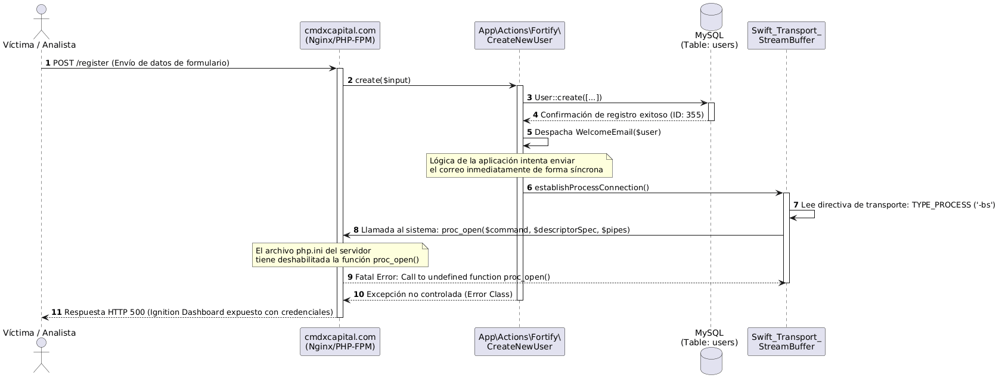
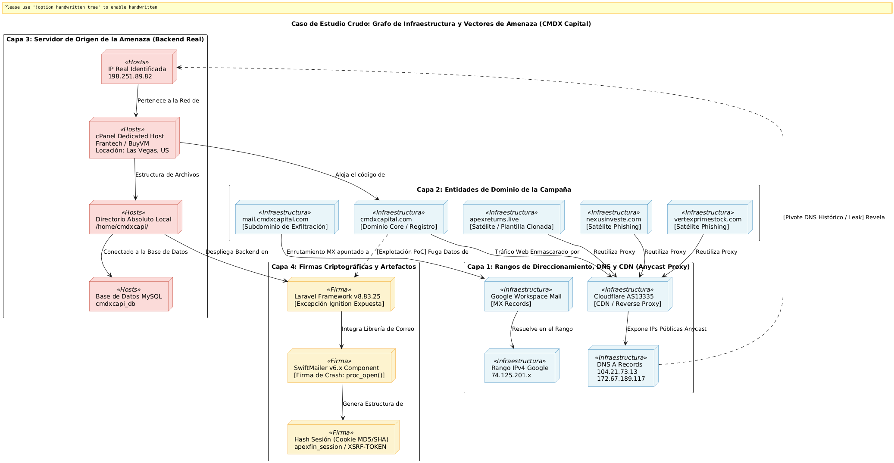
Los dominios satélites incluyen apexreturns.live, vertexprimestock.com, nexusinveste.com y al menos 10 dominios adicionales. Todos comparten la misma plantilla HTML, los mismos canales de Telegram y las mismas hojas de estilo Bootstrap. Esta reutilización de infraestructura es un patrón que también documenté en el análisis de la red de Pig Butchering bybsusd.com, donde los atacantes reciclaban plantillas Vue3 con Vant UI y mantenían un backend constante mientras rotaban dominios.
El Eslabón Anterior: Bremby (bremby.biz)
La campaña cmdxcapital no nació de la nada. Es la iteración más reciente de una infraestructura de fraude que operó anteriormente bajo la marca Bremby (bremby.biz). Los registros públicos de monitoreo de inversiones revelan que Bremby fue clasificado como scam confirmado, con 13 reportes de estafa, $174,664 en depósitos fraudulentos y $7,282 en listados. El dominio fue registrado en NameCheap el 12 de octubre de 2020 con vigencia hasta 2023, y estaba protegido tras el mismo escudo de Cloudflare (IPs 104.18.47.118, 172.67.146.22, 104.18.46.118) que hoy utiliza cmdxcapital. El certificado SSL también era emitido por Cloudflare Inc.
Los planes de inversión fraudulentos de Bremby —un único plan del 5% mensual— eran monitoreados por 21 plataformas de seguimiento de HYIP (High Yield Investment Programs), incluyendo invest-tracing.io, hyiptank.net, list4hyip.com y monetka.blog. La existencia de este ecosistema de monitoreo es una mina de oro para la inteligencia de amenazas: permite trazar la evolución completa de la campaña desde su encarnación anterior, confirmando que los atacantes simplemente reciclan la infraestructura, cambian el nombre de la marca y reanudan las operaciones.
El patrón es consistente con lo documentado por la FTC en múltiples casos de enforcement: los operadores de esquemas HYIP y falsos exchanges mantienen la misma columna vertebral técnica —Cloudflare como escudo, NameCheap como registrador, plantillas recicladas— y solo cambian la fachada cuando la marca anterior se quema. Bremby operó durante tres años antes de ser desmantelado. CMDX Capital es su reemplazo directo.
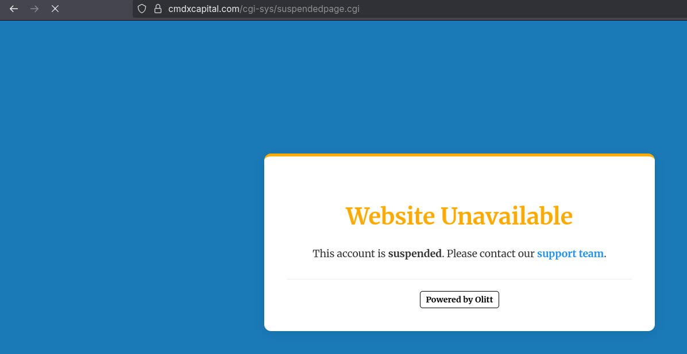
Los sitios de monitoreo de HYIP como InvestorsStartPage, hyiptank.net y list4hyip.com son fuentes de inteligencia subestimadas. Mantienen registros históricos de dominios, depósitos, reportes de estafa y direcciones IP que permiten trazar la evolución de una campaña a través de múltiples identidades. La correlación entre Bremby y CMDX Capital no es especulativa: comparten el mismo registrador (NameCheap), el mismo CDN (Cloudflare), el mismo rango de IPs de origen y la misma plantilla de sitio. Son la misma operación con distinto nombre.
03. Fallos de OpSec como Fuente de Inteligencia
En threat intelligence, los errores del adversario son una mina de oro. La Operación FakeWealth cometió varios fallos de seguridad operacional que permitieron extraer información que ningún atacante querría revelar. El más grave fue dejar el modo de depuración de Laravel activado en producción.
El Crash de Laravel: proc_open() y SwiftMailer
Durante las pruebas de automatización del endpoint de registro, la plataforma expuso un reporte de error completo de Laravel Client. La interfaz Ignition —diseñada para entornos de desarrollo— estaba accesible públicamente con APP_DEBUG=true y APP_ENV=production.
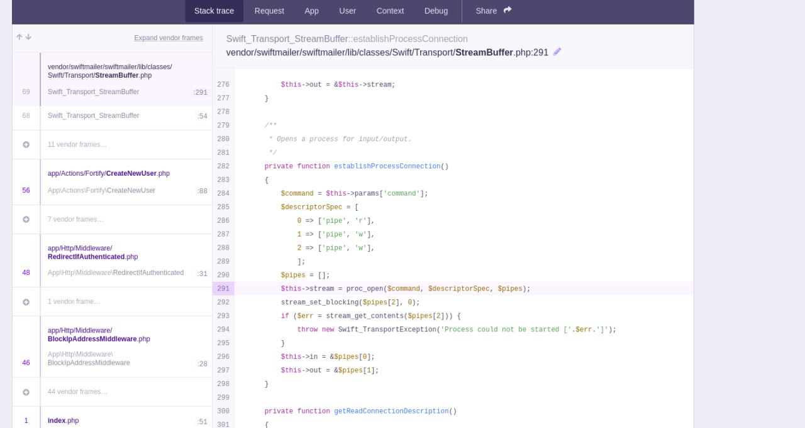
El siguiente diagrama de secuencia forense mapea la interacción entre el navegador y el backend durante el crash, desde el POST hasta la exposición del stacktrace:
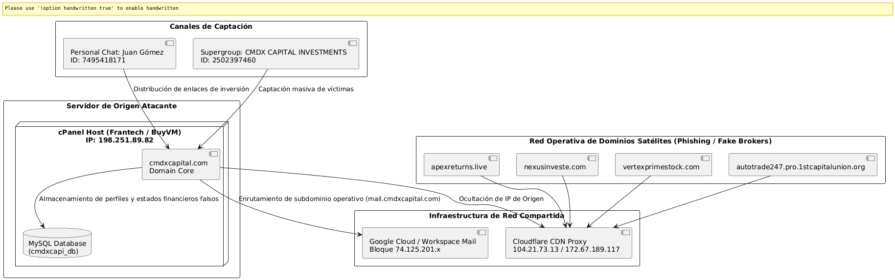
El error se originaba en Swift_Transport_StreamBuffer.php, línea 291. El flujo: el usuario se registra, Laravel Fortify inserta el registro en users y crypto_accounts, el sistema intenta despachar un WelcomeEmail mediante SwiftMailer, este invoca proc_open() para interactuar con sendmail, y al estar la función deshabilitada en php.ini, la aplicación crashea exponiendo todo.
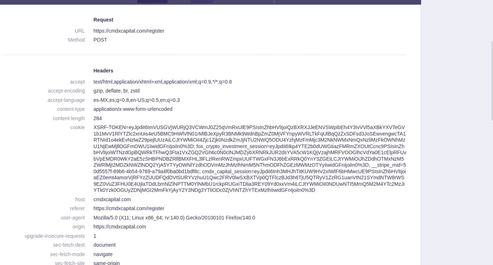
Inteligencia Extraída del Debug Mode
La interfaz Ignition no solo mostraba el error. Exponía información que alimentó directamente la inteligencia sobre la campaña:
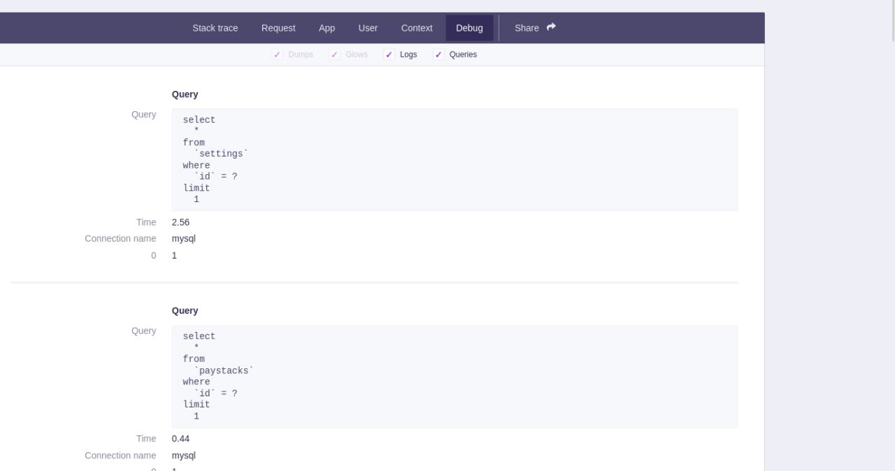
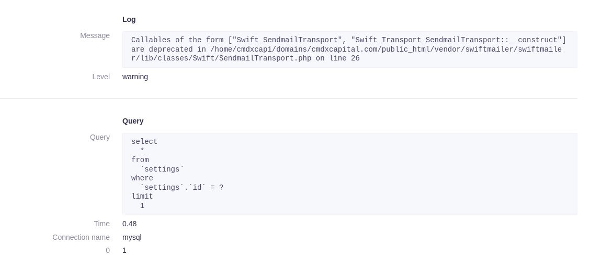

El debug mode activo en producción no es solo una vulnerabilidad: es una fuente de inteligencia. Permitió mapear la estructura de la base de datos, identificar la lógica de negocio del backend (Fortify, SwiftMailer, WelcomeEmail) y obtener las rutas absolutas del servidor. En la Threat Hunter Recollection documento cómo este tipo de errores de configuración son una constante en campañas de fraude: desde OpenSSH 7.4 en servidores de Hong Kong hasta captchas con claves en el JSON del lado del cliente. La lección para desarrolladores es clara: nunca despliegues a producción con APP_DEBUG=true. Un simple flag en el .env puede exponer toda la arquitectura de tu backend.
04. Evasión de Controles y Automatización de la Recolección
El formulario de registro implementaba un captcha trivial de evadir. El HTML contenía un input oculto con el valor de confirmación:
Este patrón —delegar la validación del captcha a un valor estático en el cliente— es el mismo tipo de error que documenté en el análisis de la red de Pig Butchering, donde el backend devolvía la clave de validación del captcha en el propio JSON de respuesta. En ambos casos, la inteligencia obtenida permite automatizar la recolección de datos del adversario sin interacción humana.
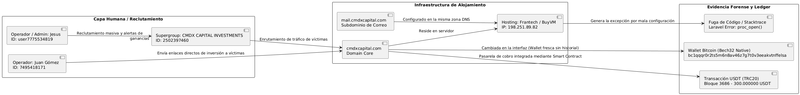
La siguiente captura muestra la ejecución real del script de auditoría que desarrollé para validar la evasión:
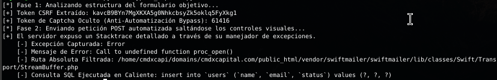
05. Inteligencia en Blockchain y Suplantación Corporativa
Migración de Wallets
Durante el monitoreo, los atacantes migraron su infraestructura de pagos: eliminaron Litecoin, mantuvieron USDT y reemplazaron la dirección de Bitcoin por una billetera Bech32 nativa sin historial previo:
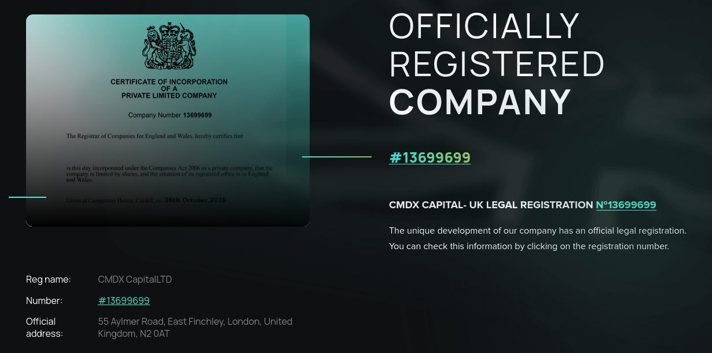
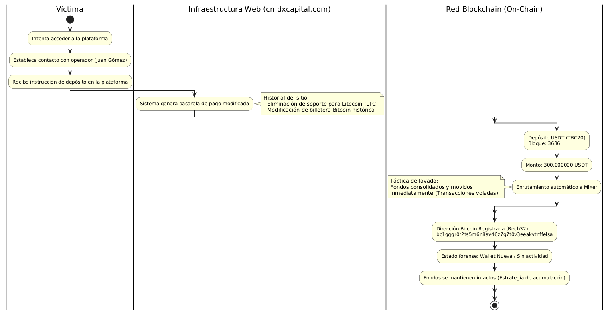
Suplantación de Companies House UK
La campaña utilizaba identidades clonadas de empresas británicas disueltas. El registro oficial de Companies House (Empresa N° 13699699) muestra que la entidad cesó operaciones en 2023. Los atacantes clonaron su estructura antes de la disolución. Esta técnica de legal spoofing es recurrente en campañas de fraude financiero: los atacantes buscan entidades disueltas en jurisdicciones con registros públicos accesibles (UK, Singapur, Hong Kong) para robar su identidad corporativa y proyectar una falsa sensación de respaldo legal ante las víctimas.
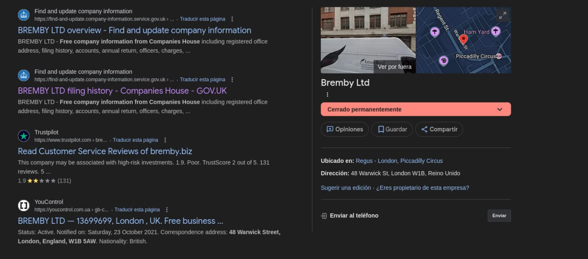
06. Correlación de Actores e Infraestructura
El siguiente grafo une la capa de ingeniería social con la infraestructura on-chain, asociando las identidades de Telegram de los operadores con las carteras que recibieron los fondos.
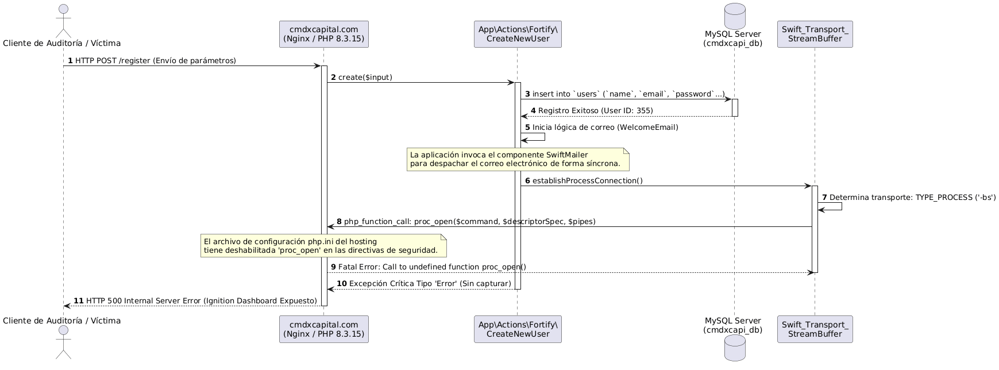
07. Recomendaciones de Caza (Threat Hunting)
- Bloquear el dominio core y todos los satélites en firewalls, proxies y sistemas de filtrado DNS.
- Monitorear la wallet Bitcoin bc1qqqr0r2ts5m6n8av46z7g7t0v3eeakvtnffelsa para detectar nuevas transacciones y posibles víctimas.
- Buscar nuevos dominios que compartan la misma plantilla HTML, canales de Telegram u hojas de estilo Bootstrap.
- Rastrear instalaciones de Laravel con debug mode activo en dominios relacionados con trading o criptomonedas. La exposición de Ignition es un indicador de infraestructura mal configurada vinculada a campañas similares.
- Consultar los hashes SHA-256 de los archivos asociados contra VirusTotal, Maltiverse y Hybrid Analysis.
- Implementar reglas para formularios con captcha vulnerable: buscar patrones HTML donde el valor de confirmación viaje como input oculto estático en el cliente.
- Monitorear plataformas de tracking de HYIP como InvestorsStartPage, hyiptank.net y list4hyip.com para identificar nuevos dominios que repliquen el patrón de Bremby/CMDX Capital.
- Correlacionar registros de Companies House con dominios de trading e inversión para detectar suplantación de entidades disueltas.
08. Conclusión
La Operación FakeWealth demuestra que la inteligencia de amenazas no depende de zero-days ni de accesos privilegiados. Depende de saber leer lo que el adversario deja expuesto. Un debug mode activo en producción, un captcha con valor estático en el HTML, una wallet Bech32 recién creada, una empresa británica disuelta en 2023 y un historial de fraude documentado en plataformas públicas de monitoreo de HYIP son piezas que, correlacionadas, dibujan el mapa completo de una campaña que ha estado operando desde al menos 2020 bajo diferentes nombres.
La trazabilidad entre Bremby y CMDX Capital —confirmada por el mismo registrador, el mismo CDN, el mismo rango de IPs y la misma plantilla— revela que no estamos ante un atacante oportunista, sino ante un grupo que opera de forma continua, reciclando infraestructura y cambiando de marca cuando la anterior se quema. Los $174,664 en depósitos fraudulentos documentados en Bremby son solo la punta del iceberg de lo que esta operación ha generado desde 2020.
Este caso es la versión extendida de la investigación que menciono brevemente en la Threat Hunter Recollection, donde conecto cinco investigaciones reales con sus TTPs, IoCs y lecciones aprendidas. La metodología de pivoting sobre infraestructura es la misma que apliqué en el análisis de la red de Pig Butchering bybsusd.com: en ambos casos, los atacantes usan Cloudflare como escudo, rotan dominios y reciclan plantillas. La diferencia es que cmdxcapital cometió el error de dejar Laravel hablando solo en producción, y tuvo la mala suerte de heredar un historial de fraude perfectamente documentado en plataformas públicas de monitoreo.
/¿Te interesa la inteligencia de amenazas aplicada a fraudes financieros?
Este caso es parte de una serie de investigaciones de threat hunting que abarcan OSINT, blockchain forensics y deconstrucción de infraestructura criminal. Cada investigación revela un patrón: los errores de configuración del adversario son la mejor fuente de inteligencia.
09. Referencias
- Threat Hunter Recollection — Crónica completa de cinco investigaciones reales (tty503.com)
- Red de Estafa "Pig Butchering" — Fake Crypto Exchange Multi-Dominio (tty503.com)
- Pentesting a Web API Financiera: IDOR por Validación Incompleta de JWT (tty503.com)
- PLC Siemens S5/S7: Ingeniería Inversa y la Deficiencia Estructural de Logs (tty503.com)
- Companies House UK — Registro de la empresa N° 13699699 (disuelta 2023)
- InvestorsStartPage — Registro de Bremby (bremby.biz) como scam confirmado. Dominio registrado en NameCheap (2020-2023), alojado tras Cloudflare, con 13 reportes de estafa y $174,664 en depósitos fraudulentos. Plantilla clonada posteriormente por CMDX Capital.
- Reporte de fraude — Bremby (plataforma clonada predecesora de CMDX Capital)
- PHP Manual — Función proc_open()
- Blockchain.com Explorer — Trazabilidad de wallets Bitcoin